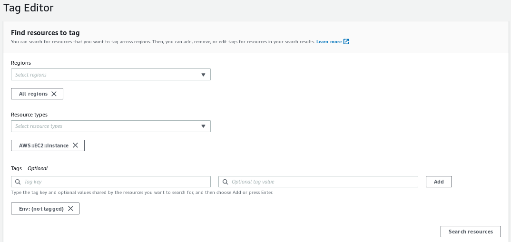
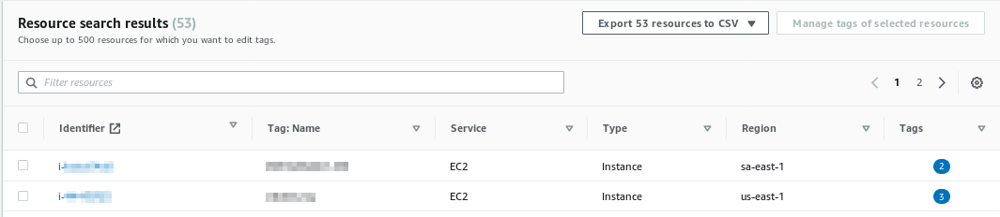
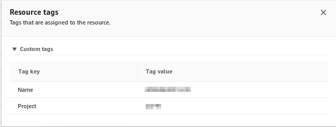
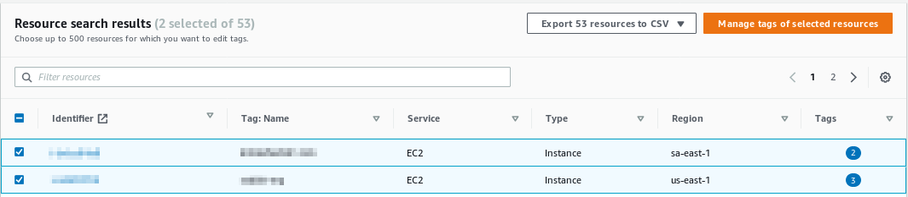
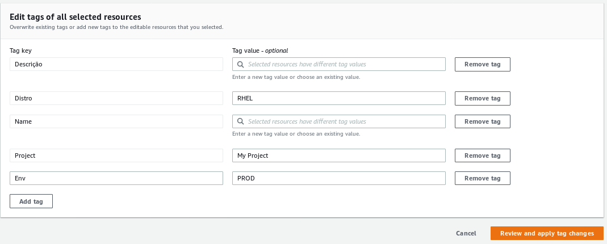
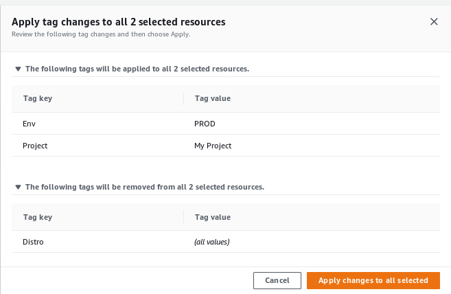
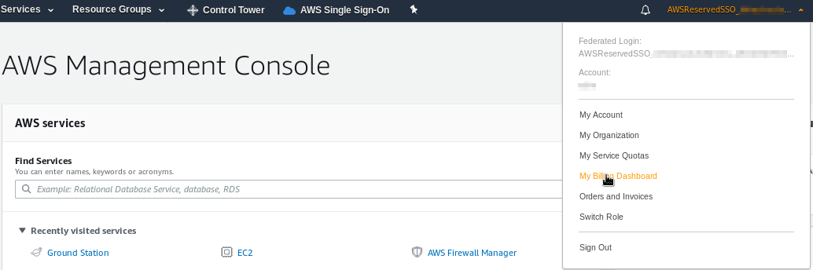
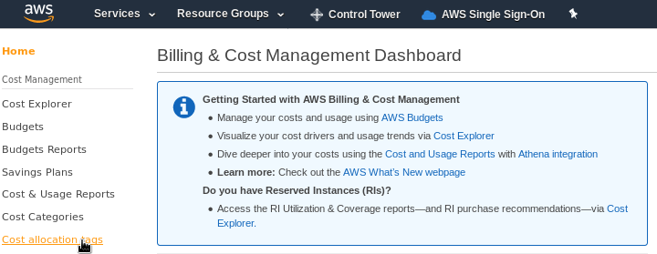
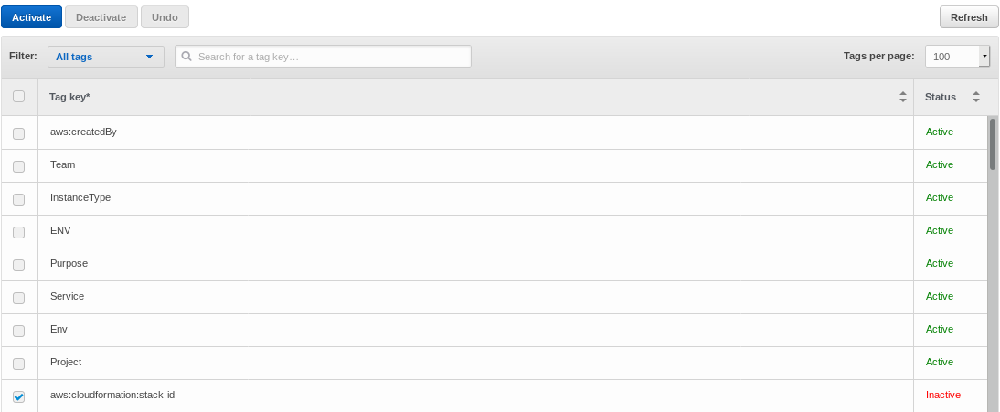
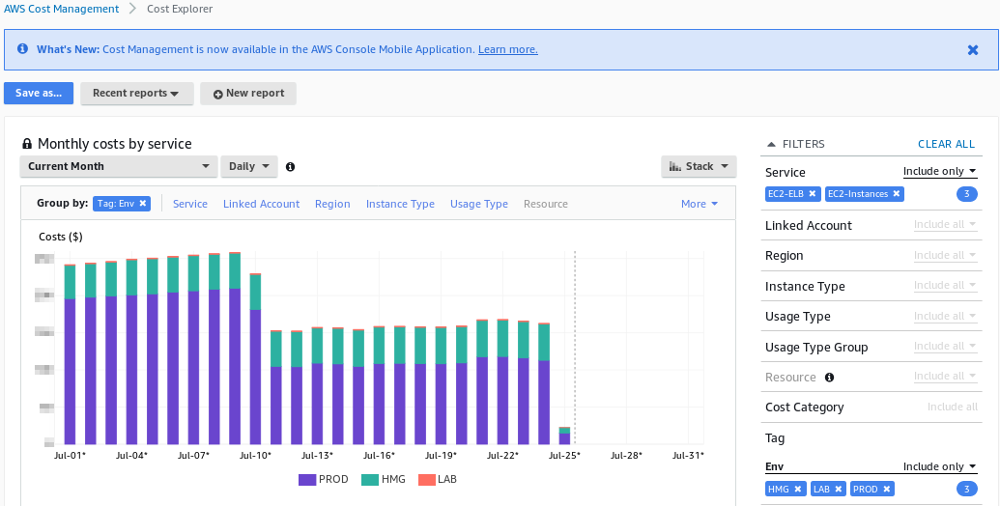

If you are new to AWS or even if you are running it for a long time, you probably have just one account holding all your resources, and I bet you asked yourself at least once if there is any way to better organize your resources, manage their access and split your billing through your company cost structure.
Maybe you already manage multiple independent accounts and from time to time has to apply all the security and other good best practices you have just found around on all accounts to have them all standardized.
If you catched yourself answering yes for any of these, you are not alone, actually you probably are part of the majority part of AWS consumers, and this is not exactly your fault.
Keeping updated about all AWS features, services and guidelines is really hard, to not say it’s almost impossible. Those guys there really do their best to keep us busy learning their new stuff.
So, what is the best way to better organize your resources, improve your projects security, and split up your billing? The answer is not that simple and you’ll find out there are plenty of ways to do it.
Resource Tagging, Multi Accounts, Organizational Units, Landing Page and Control Tower are some of the ways on how to organize your AWS resources. You can choose a few of these approaches or put them all together.
Over this series I’ll share a bit about my experience on these subjects, some principles, ideas and caveats. Let’s figure out what the benefits are in each case.
Tagging your resources
If you are not tagging your resources yet, please make yourself a favor and start to do it ASAP. Tagging is not only a way to split up your Billing account through your company cost structure, but it can also help you better organize your resources and find all your ‘Project X’ related resources wherever you are looking for it from the Console, API or CLI, and best of all, it’s totally free of charge.
According to AWS Tagging Best Practices whitepaper, those are the main Tagging use cases:
- Console Organization and Resource Groups
- Cost Allocation
- Automation
- Operations Support
- Access Control
- Security Risk Management
Before starting to use Tags, take a time reading the AWS Official Documentation about Tagging and also the whitepaper about Tagging Best Practices.
Have a time structuring a good Tag Plan that represents your company and projects needs but if you are in a rush I recommend you to add at least a pair of Env and Project tags to identify both the Environment and Project of which a resource belongs.
Note that almost all kinds of resources on AWS support Tags, if not all, and the majority uses the tag Name to identify the resource name on the console, so even if you are not applying any specific tag, you probably have at least the Name tag, like in the EC2 visible name for example.
Warning: Both Tags and their Values are case sensitive, so keep it consistent and don’t mix Env with ENV or env, with values PROD, prod or Prd, for example. It’s really easy to have this happening.
Manage your resources Tags
While you can search for specific resources with a Tag on some of AWS Services, like on the _EC2 Instances _section, or through the CLI, the best way to search and manage all your resources tags in an easy way is through the Tag Editor in the AWS Console. You can access it following these steps:
- From the AWS Management Console, click on Resource Groups on the upper bar, right beside the Services menu
- In the navigation menu, choose Tag Editor
On this example we’ll look for all the EC2 instances on All regions which doesn’t have a Env tag applied.

Looking through the results, we can see two instances from different regions, and what’s interesting here is that both resources already have some tags.

What’s interesting here is that both resources already have some tags applied. Let’s take a deeper look on the first one.
As we can see, it has a Name tag as I’ve stated before, but it also does have a Project tag.

From this same interface we can correct this situation and apply the Env tag to our resources in a batch, just close the details window and do the following:
-
Select the resources you want to change current tags and values, and click on the orange button _Manage tags of selected resources 
-
Add, remove or change the desired tags and click on the orange button Review and apply tag changes 
-
Review the changes and click on Apply changes to all selected 
Enable Cost Allocation Tags
Now that we have some tags applied to identify our Projects and Environments, it’s time to enable Cost Allocation Tags on our Billing. To do so, let’s go through this simple steps:
-
Sign in to the AWS Management Console and open the Billing and Cost Management console 
-
In the navigation pane, choose Cost Allocation Tags 
-
Under AWS-Generated Cost Allocation Tags or User-Defined Cost Allocation Tags, choose the tags you want to use to filter your Billing and click on the blue button Activate 
-
After a few days, we’ll be able to see our detailed billing splitted by our tags, like in the example below: 
Tag Policies
If you are taking Tags for serious, it could be great to apply policies to ensure new resources are being tagged on creation time. This AWS Blog shows you how to enable and create Tag Policies.
Conclusion
Through those simple steps we started tagging our resources, so we can now have it better organized, and as a bonus we can also see our billing cost split by our Tags, but our journey is just beginning. On the next posts of this series we’ll look over other AWS Services and Tools to help us manage our accounts with a consistent, organized, secure and ready to grow environment.